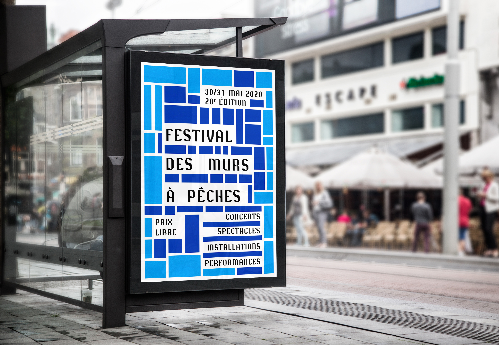
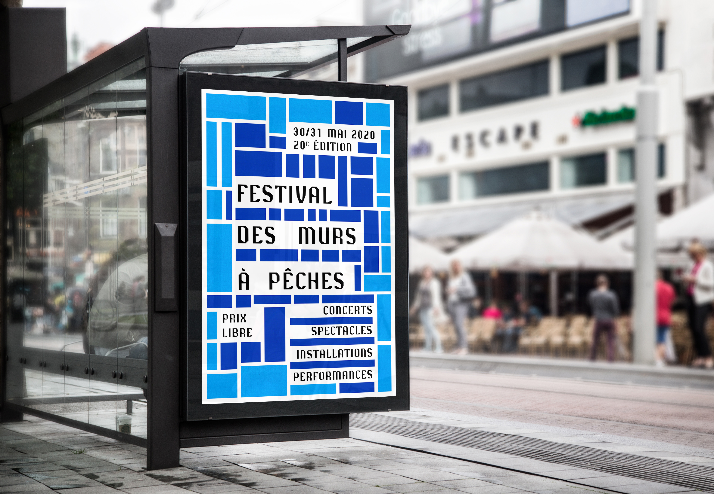

Projet : Création d’un teaser vidéo et d’une affiche pour un festival.
Commanditeur : Festival des murs à pêches (Montreuil).
Dimensions video : 1 920 x 1 080
Dimensions affiche : 120 x 176 cm
Le festival des murs à pêches est un festival engagé pour la préservation du secteur des murs à pêches. Autrefois étendu sur 320 hectares, il ne recouvre aujourd’hui plus que 30 hectares à Montreuil. Le plan, très spécial de cet endroit, se compose de plusieurs parcelles rectangulaires. Ce plan a inspiré l’identité visuelle du teaser et de l’affiche. Géométrique et dynamique, le teaser est simple mais efficace.
 
